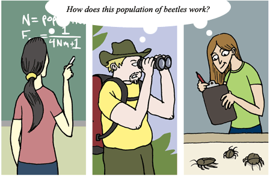
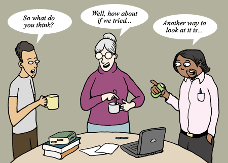
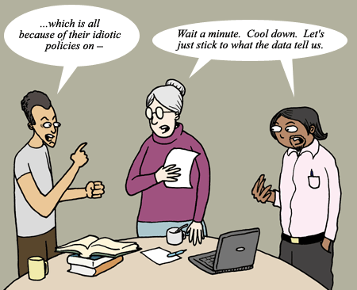

People from all over the world from all sorts of different cultures and backgrounds are a part of the scientific community. At some points in history, science has largely been the domain of white males, but that is simply no longer true. A glance at the authors on recent papers in top scientific journals confirms that diversity is now the norm. Rajsapan Jain, Khayrul Kabir, Joe Gilroy, Keith Mitchell, Kin-chung Wong, and Robin Hicks collaborate on high temperature magnets. Nerilie Abram, Michael Gagan, Zhengyu Liu, Wahyoe Hantoro, Malcolm McCulloch, and Bambang Suwargadion collaborate on ocean-atmosphere interactions. And Jane Carleton and her team of 64 researchers in 10 different countries around the world collaborate on the genome sequences of disease pathogens. Many of these scientists come from different societal cultures and geographic regions; however, in their research, they are all united by the global culture of science. Science is truly without borders.
Scientists from such diverse backgrounds bring many points of view to bear on scientific problems. The 24-year-old chemistry graduate student from South Africa, the 41-year-old fisheries biologist from Florida, and the 65-year-old paleontologist from Beijing probably all have quite different perspectives on the world, and science benefits from such diversity.
- Diversity facilitates specialization. Scientists have different strengths and different interests. Not only do people from different backgrounds choose to investigate different questions, but they may approach the same question in different ways. So, the biologist with a penchant for math, the biologist with an interest in human behavior, and the biologist who can't get enough of microscopes and lab work can all focus on their strengths. While each might choose to tackle the same topic (say, human cognition), they will do so from different angles, contributing to a more complete understanding of the topic. 
- Diversity invigorates problem solving. Science benefits greatly from a community that approaches problems in a variety of creative ways. A diverse community is better able to generate new research methods, explanations, and ideas, which can help science over challenging hurdles and shed new light on problems. For example, Albert Einstein approached the notions of space and time in a very different way from his contemporaries, coming up with ideas that, though unintuitive, were supported by evidence and opened up new areas of research. 
- Diversity balances biases. Science benefits from practitioners with diverse beliefs, backgrounds, and values to balance out the biases that might occur if science were practiced by a narrow subset of humanity. As an example, consider the ongoing scientific investigation of climate change. With such a hot-button issue, personal beliefs about the environment, the economy, business, and politics could unwittingly bias one's search for or assessment of the evidence. But science relies on a diverse community, whose personal views run the gamut: liberal to conservative, tree-hugging to business-friendly, and all sorts of combinations thereof. Scientists strive to be impartial and objective in their assessments of scientific issues, but in those occasional cases in which personal biases sneak in, they are kept in check by a diverse scientific community. 
So science depends on diversity. If scientists were all the same, scientific controversy would be rare, but so would scientific progress! Despite their diversity, all of those individual scientists are part of the same scientific community and contribute to the scientific enterprise in valuable ways.